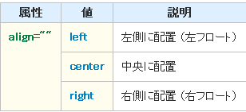

| HTML＞TABLE15 |
| text-align:★ 横方向の位置 |
| vertical-align:◆ 縦方向の位置 |
★・・left,ribht,center,justify ◆・・baseline,top,middle,bottom |
(横方向の位置) セルの内容の横方向の位置はtext-alineプロパティ‐で指定します。 |
| （値の指定方法）
left 左揃え right 右揃え center センタリング justify 均等割付。単語間のスペースを調整する機能をもち、主に単語を半角スペースで区切って利用されます。 |
（縦方向の位置） 枠線の種類は、border-stylプロパティ‐で指定します。 インライン要素に指定した場合とでは効果が異なりますので注意して下さい。 |
（値の指定方法） baseline セルのベースラインを、そのセルが含まれている先頭の行のベースラインに 揃えます。 top セルの上線を、そのセルが含まれている先頭の上線に揃えます。 middle セルの中心を、そのセルが含まれている横列全体の中心線に揃えます。 bottom セルの下線を、そのセルが含まれている最後の下線に揃えます。 |
タグ リンク |
|---|
| 表（テーブル）を作りたい |
| 表の枠線を表示したい |
| 行や列に見出しを付けたい |
| キャプションを付けたい |
| キャプションの位置を指定したい |
| 行をグループ化したい |
| 列をグループ化したい |
| 列に属性を指定したい |
| 縦方向のセルを連結したい |
| 横方向のセルを連結したい |
| 表の位置を指定したい |
| 表に対する回り込みを解除したい |
<table align="left"> ～ </table>
